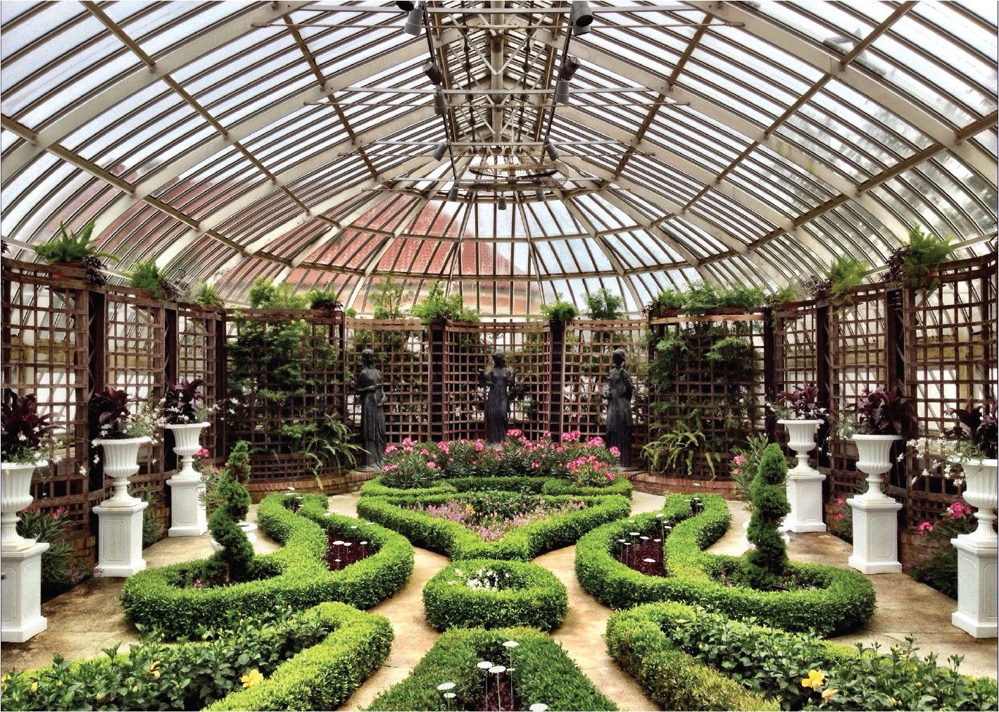

Phipps Conservatory and Botanical Gardens
Team
- Jibby Ayo-Ani
- Suvrath Penmetcha
- Alex Tsai
Opportunity
Our clients discussed in depth the importance of not just providing an engaging experience for the visitor, but also influencing people’s attitudes towards sustainability and ultimately effecting a change in their behavior. For the CSL, in particular, it is their goal to influence people to adopt more sustainable lifestyles in their own homes. Specific examples include taking shorter showers to conserve water, taking advantage of natural lighting when possible to reduce energy consumption, and being mindful of their food sources. They have tried to address this goal by investing in a dashboard that shows real-time data though it is designed for scientists and experts instead of the general audience.
Outcomes
Our final outcome was a web application that serves as a companion guide to visitors of the Center for Sustainable Landscapes. The app helps increase the amount of accessible information to learn about the space as well as providing deeper interaction. The web page uses HTML, CSS, and JavaScript together to create a platform for a variety of content whether it be text, images, multiple choice questions, or even graphs with live data.
Deliverables
The main deliverable to our client is a link to our application (http://phipps-csl.github.io/) which is hosted on GitHub and also a link to the GitHub repository which contains all the source code. We will provide a username and password to the GixtHub account and to the email we used to create the GitHub account. We will provide technical documentation in addition to our solution as a reference and also for future integration with Phipps’s CMS tool called ExpressionEngine. Additionally, we will provide a .zip file containing all the pictures as well as icons we created for the application. Lastly, we will provide the username and password to access Phipps’s live-data.